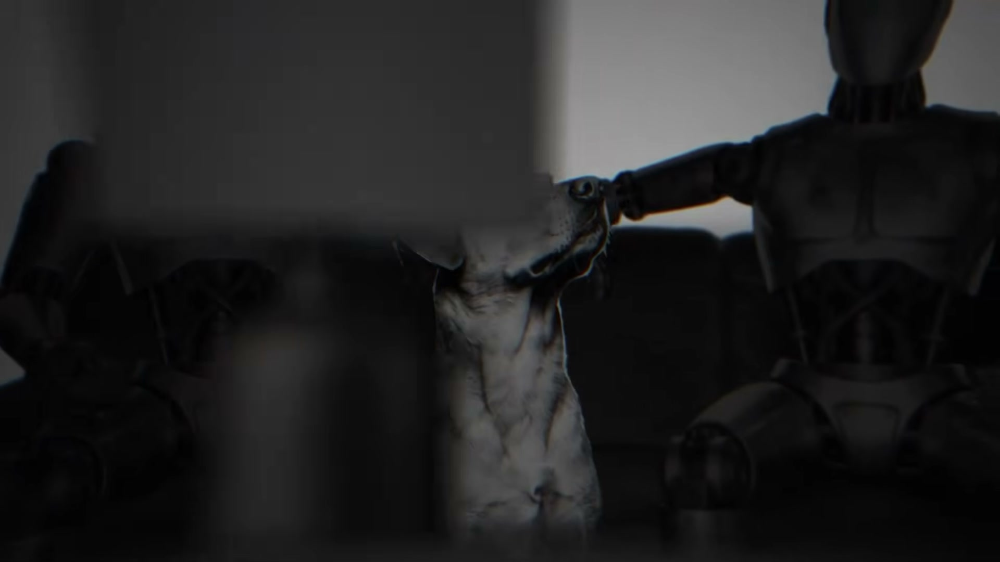
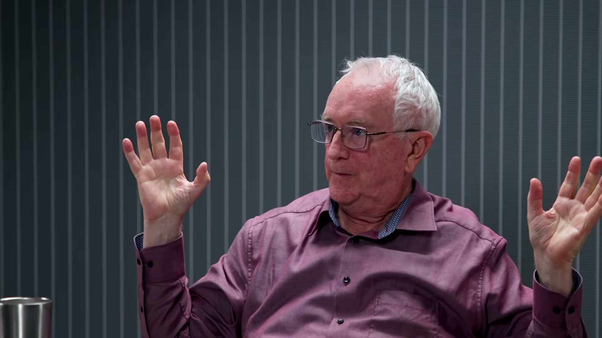

Konstantin Kisin: Naši lídri stratili kontrolu a čelíme najväčšej skúške

Zlyhávanie politických elít a ignorovanie reality vytvára nebezpečné napätie.
Ignorovanie problémov strednej triedy vedie k radikalizácii
Inflácia a prehlbujúce sa rozdiely ničia dôveru občanov v štátne inštitúcie.
Umelá inteligencia mení trh práce rýchlejšie, než sa stíhame adaptovať

Vzdelávací systém nie je pripravený na tempo nahrádzania profesií algoritmami.
Lekcie zo Sovietskeho zväzu: Nebezpečenstvo ideologického dogmatizmu
Pragmatický technologický štát vyhráva nad systémami uväznenými v byrokracii.
Učte sa technologickú gramotnosť a nezameniteľné expertízy.
Nespoliehajte sa na štátne garancie, budujte rezervy.
Udržiavajte rodinné a lokálne vzťahy v reálnom svete.
Filtrujte informačný šum a sústreďte sa na veci pod kontrolou.